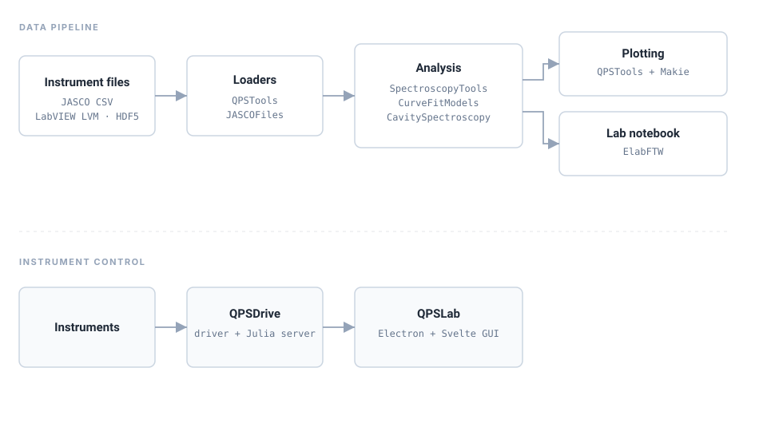

CurveFitModels.jl
RegisteredModel functions: lorentzian, gaussian, pseudo_voigt, dielectric, sinusoids. Zero dependencies, pure math.
From curve-fit primitives and file parsers through analysis, plotting, and instrument control — composable packages that thread together through multiple dispatch.
Instrument files flow through loaders into analysis, then into publication-ready figures and an eLabFTW entry. A parallel control stack drives the instruments themselves.

Each layer is its own package. QPSTools is the lab's private integration layer — not an umbrella. Install only what you need.
Model functions: lorentzian, gaussian, pseudo_voigt, dielectric, sinusoids. Zero dependencies, pure math.
JASCO CSV parser for FTIR, Raman, and UV–Vis spectra, with header-metadata extraction.
Peak fitting, baselines, exponential decay fitting with IRF, PL maps, and unit conversions — the analysis workhorse.
Polariton analysis — extraction from QPSTools in progress. Repository currently an empty shell.
The lab's integration layer: LabVIEW LVM loaders, Makie plotting themes, cavity analysis, and eLabFTW provenance glue. Does not re-export siblings.
Full eLabFTW lab-notebook API client — experiments, items, tags, uploads, and links.
Instrument control — delay stages, lock-ins, monochromators, and the scan engine (WebSocket server).
Live data viewer — GLMakie with folder-watch for in-flight visualization.
Electron + Svelte GUI analysis app, backed by a Julia HTTP server over the same analysis libraries.
QPSTools deliberately does not re-export its siblings. Load each package explicitly — multiple dispatch threads them together.
using QPSTools # loaders, plotting, cavity, eLabFTW glue
using SpectroscopyTools # fit_peaks, fit_exp_decay, correct_baseline, …
using CurveFitModels # lorentzian, gaussian, pseudo_voigt, …
using JASCOFiles # JASCOSpectrum, isftir, israman, isuvvis
using ElabFTW # create_experiment, tag_item, …
using CairoMakie
spec = load_cavity("data/cavity/Au_0deg.csv"; mirror="Au", angle=0)
result = fit_cavity_spectrum(spec;
oscillators=[(nu0=2055.0, Gamma=23.0)], L=12e-4, n_bg=1.4)
fig, ax, ax_res = plot_spectrum(spec; fit=result, residuals=true)
save("figures/cavity.pdf", fig)
log_to_elab(spec, result; title="Cavity fit: Au 0°",
attachments=["figures/cavity.pdf"])